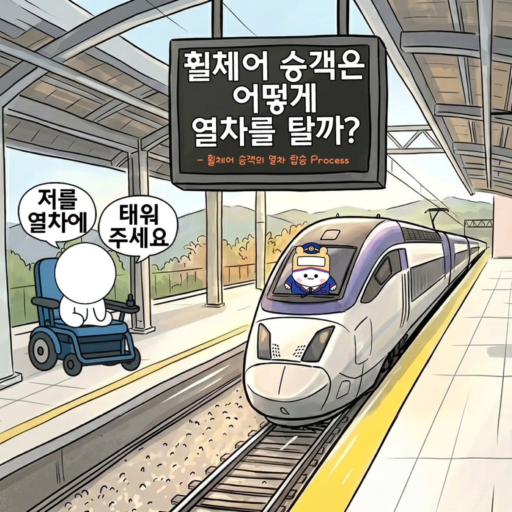
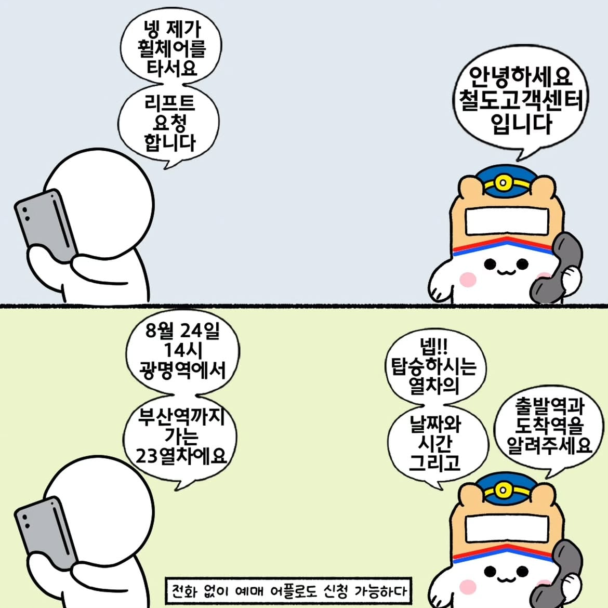
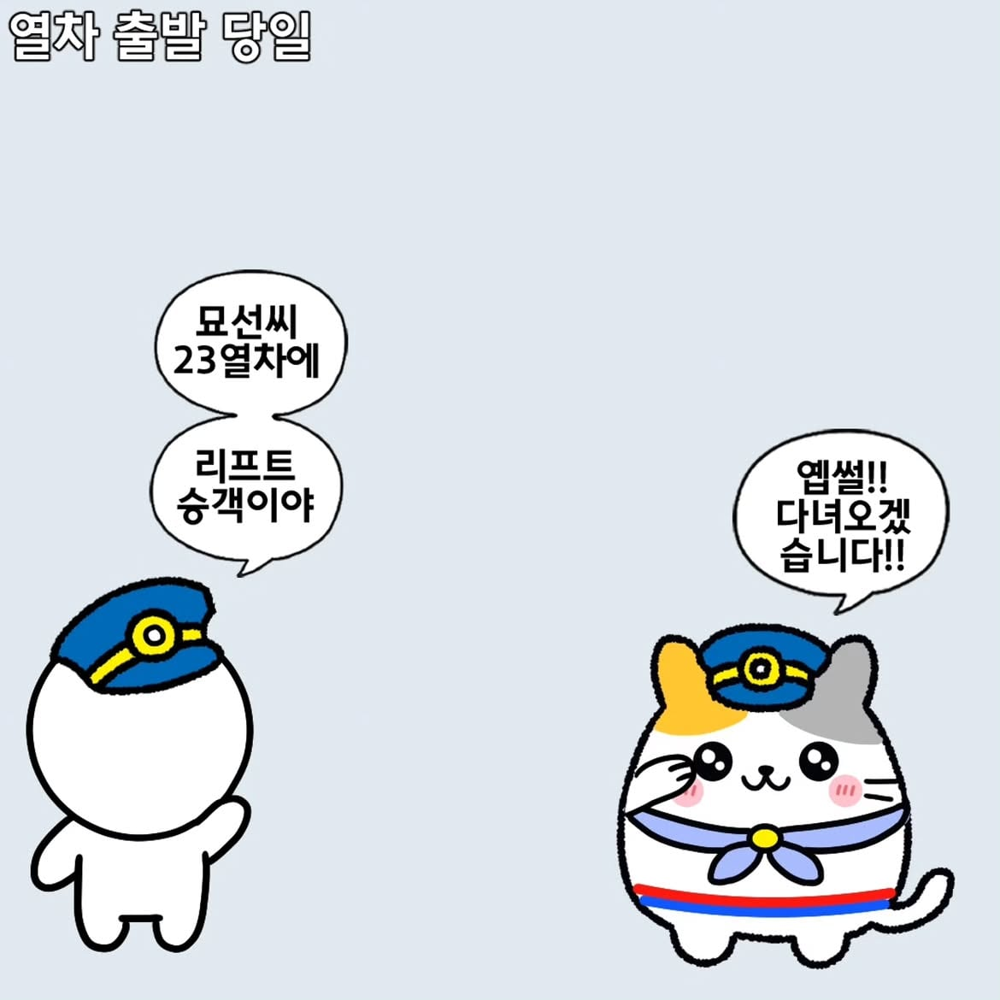
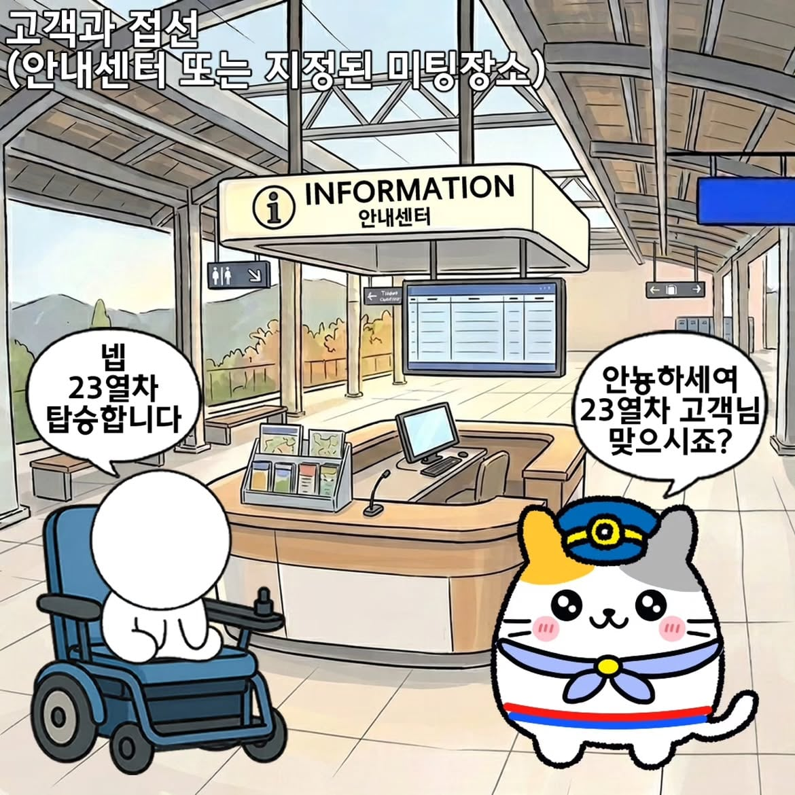
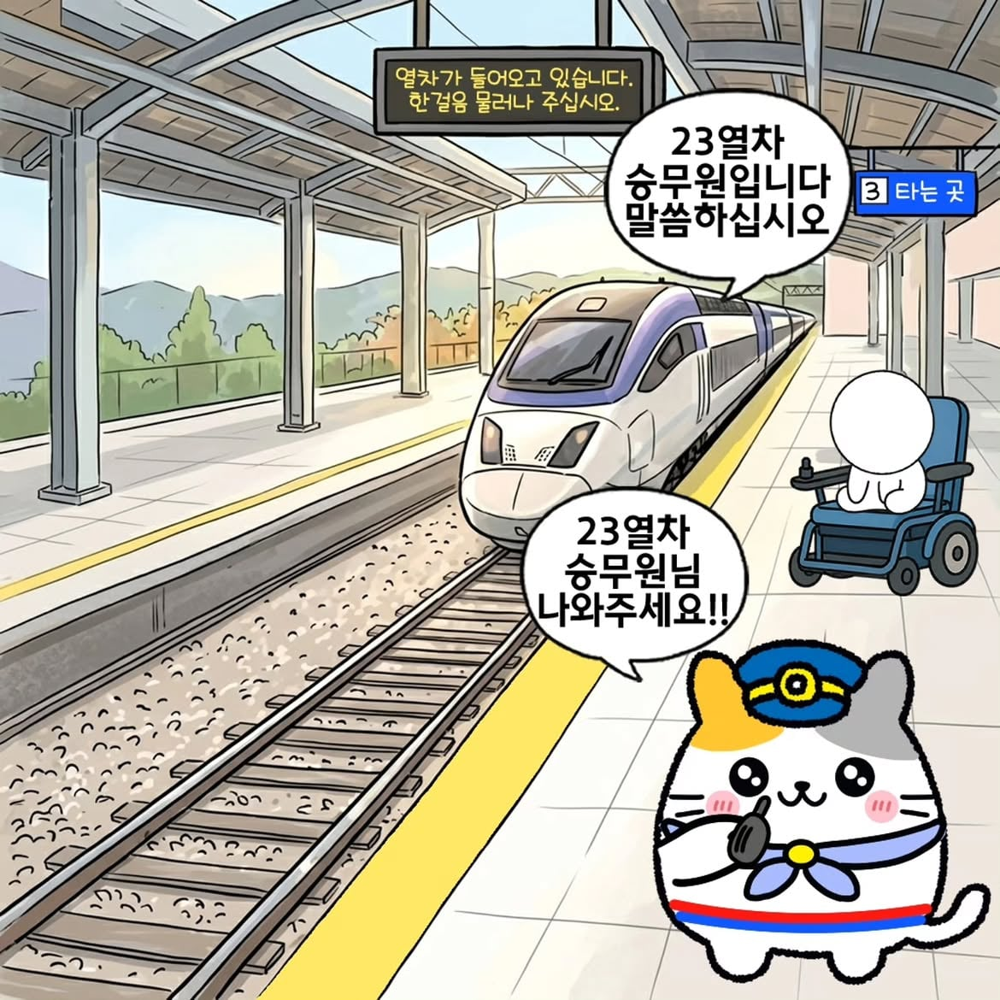
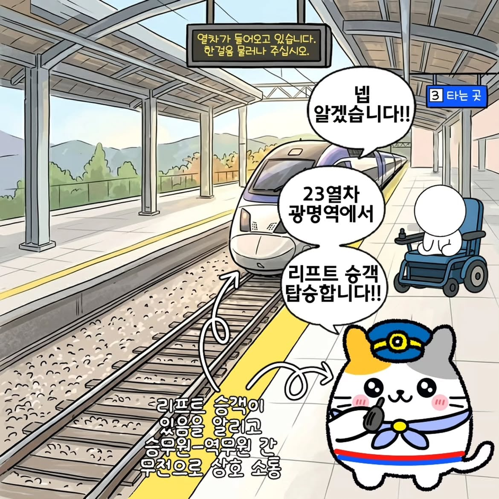
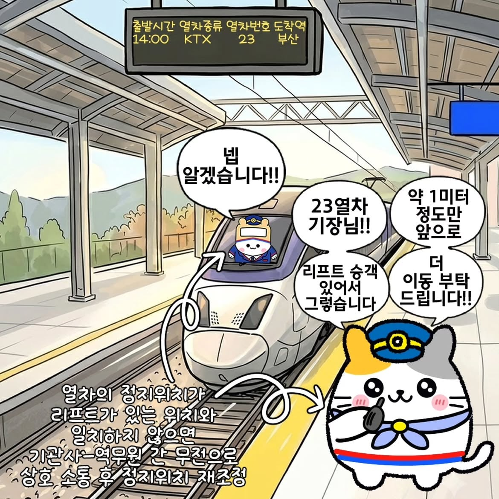
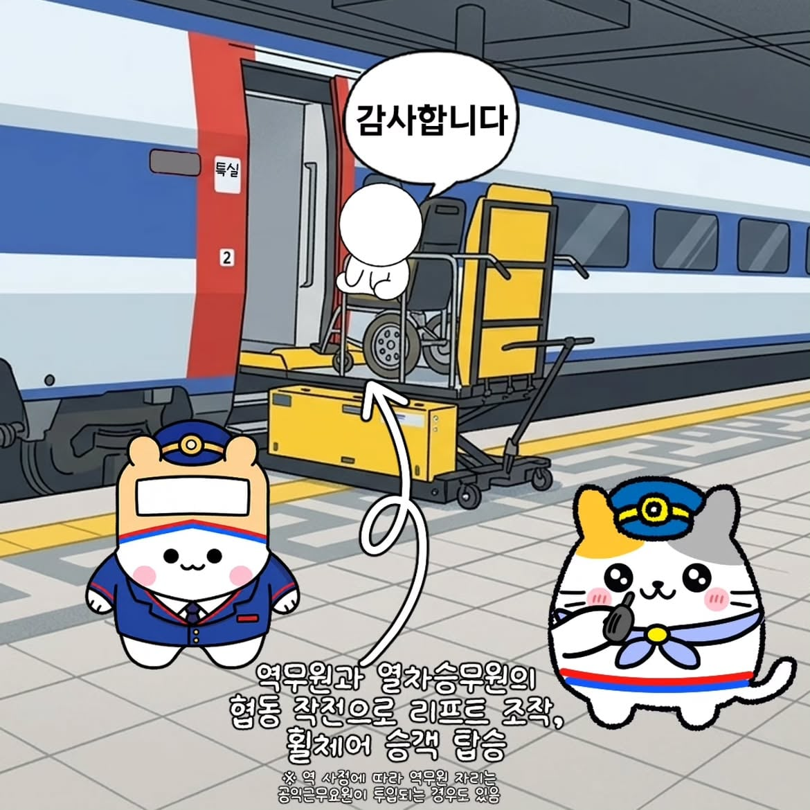

출처
https://www.instagram.com/p/DcbGKBpE9QY/








출처
https://www.instagram.com/p/DcbGKBpE9QY/
댓글
수집 당시 댓글 7개
닉네임변경42 · 10 시간 전
말풍선 위치 가독성 뭐야 독자의 시선 따라가기는 기본아니냐
오늘부터우리는 · 10 시간 전
와...쉽지 않아보인다.
Ang마사냥꾼 · 10 시간 전
뭔가 여기저기 폐끼치는거 같아서 괜히 그러네...
다주택중과세폐지 · 8 시간 전
300번이 넘게 누군가가 자기를위해 저렇게 올리고 내리게 해준거야? 그것도 뭐 나라를 구한것도 아니고 누구를 돕다 그런것도아니고 술처먹고 사고난걸로 세금도 쓰이고? ㄹㅇ 사회적강자
년후특이점이온다 · 5 시간 전
아 태생이 아니고 그냥 술꼬라서 저런거였구나
에궁님 · 5 시간 전
오 저런식으로 올려서 타는구나 난 뭐 대충 판 같은거 놔서 경사 만들어서 탈까? 했었는데
미녀와야스 · 2 시간 전
ai로 대부분 그림+케릭터만 그림+말풍선으로 상황전달 뭐 이런거같은데 진짜 어지러운 만화네 ㅋㅋ